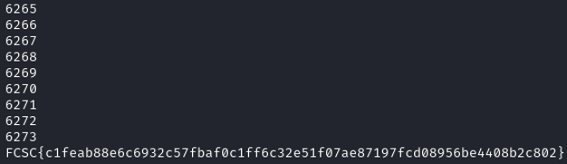

The subject comes with 2 files, a python file "lapin.py" and a text file "output.txt"
lapin.py is the python file used to encrypt the flag and the output.txt is the result of the encryption.
The script is giving some interesting information, the encryption method is AES.MODE_GCM.
First it asked the user to chose a PIN between 0000 to 9999.
To decrypt the function, we need to use the same salt, nounce (random number) and tag.
Scrypt: Scrypt is used to generate a secure private key from the password. This will make it harder for an attacker to brute-force our encryption.
the function takes 5 parameters:
- User password
- Salt: This makes it impossible for an attacker to use precomputed hashes in an attempt to crack the cipher.
- N is the cost factor. It must be a power of two, and the higher it is the more secure the key, but the more resources it requires to run.
- R is the block size.
- P is the parallelization factor, useful for running on multiple cores.
Nonce: A random nonce (arbitrary value) must be a random and unique value for each time our encryption function is used with the same key. Think of it as a random salt for a cipher. The library supplies us with a secure nonce.
Tag: The tag is used to authenticate the data when using AES in GCM mode. This ensures no one can change our data without us knowing about it when we decrypt.
In our program, the pin is the password, the salt correspond to hex(FCSC), nounce is c and we got the tag.
After several researches and test, it seems that the flag and the nonce is taking a size of 16 bytes. The encrypted message is composed of the
nonce followed by the cipher text and the tag.
enc = nonce + cipher + tag
Therefore if we get the encrypted message, we can determine the nonce and the tag.
In our case, the encrypted message is :
f049de59cbdc9189170787b20b24f7426ccb9515e8b0250f3fc0f0c14ed7bb1d4b42c09d02fe01e0973a7233d99af55ce696f599050142759adc26796d64e0d6035f2fc39d2edb8a0797a9e45ae4cd55074cf99158d3a64dc70a7e836e3b30382df30de49ba60a
nonce = f049de59cbdc9189170787b20b24f742
tag = 4dc70a7e836e3b30382df30de49ba60a
cipher = 6ccb9515e8b0250f3fc0f0c14ed7bb1d4b42c09d02fe01e0973a7233d99af55ce696f599050142759adc26796d64e0d6035f2fc39d2edb8a0797a9e45ae4cd55074cf99158d3a6
AES is a block cipher, it is reversible. We can decrypt it is we have the encrypted message, the password, the salt, nonce and tag used for encryption. The only missing element is the password.
First, we must generate the private key, we know that AES encryption is a symmetric encryption, so the key for decryption is the same as the one used for encryption.
We dib't know exactly what is the user password but we know that it is between 0 and 9999. Therefore, brute forcing is the only solution to get the password.
The AES class has a function to decrypt called "decrypt_and_verify", it has two parameters (cipher_text and the tag used for encryption).
After running the program, the flag were found after reaching 6273. The user password is 6273 !
